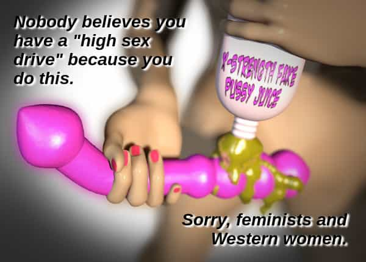

< < < Back
The Growing Epidemic Of Sexual Dysfunction Among Women – Return Of Kings
In the past few weeks, several surveys have gotten a modest amount of press stating that people are having less sex than ever before. Many potential causes are posited: porn, gadget addiction, downward economic mobility. But here’s an element of the surveys our good friends in the media cover up: it’s aging women, twice more than men, who have no sex drive. They have Sahara Snatch. But they don’t want men to know this.
Young women have been slutting it up more and more frequently at younger and younger ages for decades. Very literally, the town tramp of 1950’s America would be the choir girl prude in modern America. Feminists are proud of this: their sugar daddies running the mainstream media print their books chastising “puritanical America” for not celebrating their prematurely stretched-out snatches. Mainstream books condemn America for using the word “slut” as a pejorative. They cheer 18 year old girls for their cavernous cunts, and they demand you cheer it, too. (And now, the sluttiness is being compounded by their “toys” – electrified rubber cylinders they shove into their pussies while reading perverted fetish porn like ‘Fifty Shades of Gray’, which is warping them irreversibly.)
So that covers their early years of fertility. Now well into their twenties, the media myth of the modern American woman claims that, astoundingly, she actually gets even hornier as she gets older! Women are constantly getting close to their “sexual peak”. Let’s call this the Sex and the City Mythology for shorthand (though it’s propagated through every sitcom, media article, and Hollywood RomCom).
A Google search for “female sexual peak” reveals a funny phenomenon. The newer the article cited, the higher the age they claim women sexually “peak”. They blame previous figures on “puritanical attitudes toward sex”. This article from the UK Daily Mail hilariously claims women actually want sex more as their ability to bear children decreases. (They cite a sex toy company and actress Cameron Diaz as proof of this).
To encapsulate the Sex and the City Mythology: American women start as sluts and continue as sluts, and the older they get, the sluttier they get. That’s the myth. The truth is far simpler, far uglier, and is actually tragic for both sexes.
Virility = Fertility. Period.
Evolution and common sense observation of human behavior would suggest that most women reach their sexual peak when they’re most fertile – roughly ages 16 to 30, depending upon the individual and race. The whole purpose of sex, from Mother Nature’s point of view, is procreation and any sex outside of that is pointless or even detrimental from an evolutionary standpoint. Countless studies confirm that female sexual arousal peaks at ovulation (the point in their menstrual cycles when they can conceive children). Longer term, female fertility peaks in their early twenties. According to the National Institute of Health, their fertility begins plummeting “precipitously” in their late 20’s.
So the natural female sex drive begins dropping along with fertility in the 30’s. And the Sex and the City Mythology of women’s sex drive’s positive correlation with aging is a total lie.
Again: the notion that women want sex more as they age is anti-science, pop culture bullshit.
But wait, it’s worse than that, even. Much worse.
Testimonial of a single man in his 30’s
I have been compelled by personal observation to research the growing phenomenon of premature menopause, or “premature ovarian failure” in medicine. Just call it Sahara Snatch. More and more women in their early thirties (my age peers) and even in their twenties are having “irregular periods” (or amenhorrea). A woman saying “irregular periods”, I was recently told by a knowledgeable woman, is typically nothing more than the female ego covering up the fact that she’s having no periods. At all. No menstruation = no sex hormones = their pussies are like sandpaper = you can’t fuck them.
Let me backtrack and get a little personal.
Many gullible men believe the Sex and the City Mythology and expect great times with their female peers as they reach their thirties. Sure, a 35 year-old woman won’t be as nubile or attractive as they were at 20, but they’ll be hornier and livelier than ever, we’re told.
I know gullible men believe this bullshit because I was one of these gullible men.
I spent ages 26 to 30 in a committed relationship. Unfortunately, the relationship ended (primarily due to financial disputes). But while I was disappointed to be both single and childless at age 30, I was secretly excited to be free to indulge in the “club scene” and have some wild weekends with these sex goddesses from TV and movies at their “sexual peak”.
The real world exposed the Sex and the City Mythology as total bullshit in every way, but it took me at least a year of emotionally pulverizing experiences before the reality finally trumped the mythology.
Three attempts at flings ended up thusly:
- A girl who had been a fairly cute 7 as a twenty year old was now a titless, sickly-looking 5 in her thirties. But I was lonely and she did a good job of fronting like the carefree sexual gal by binge drinking and talking about sex all the time. But oddly, every date ended with her jabbering away narcissistically and postponing actual sex. After her excuses for avoiding sex reached the point of insult, I demanded intercourse or I was done with her. She hemmed and hawed before finally admitting that she hadn’t had her period in two years and had no sex drive.
- A night with an ex-girlfriend (early thirties) sent her scurrying to her nightstand for some “help” when we disrobed. What “help”? Repugnant industrial chemicals she needs to put on lovers’ cocks because her exhausted pussy glands can’t lubricate naturally any longer. The night ended with me – lonely, horny, and desperate – humping her leg to climax because I refused the “help”.
- A frumpy, late-thirties school administrator I met at a sports bar used double entenderes and sexual innuendo to earn my attentions – and my still-gullible faith that her sex drive matched her rhetoric. After several dates, we went to her place where we made out, but she pushed my hand away when I felt her up. I paused her ‘Princess Bride’ DVD and got more assertive when she softly told me that she was done with “casual sex” and she needed a “committed relationship” first.
I assumed that these womens’ problems were somehow my fault and I was developing deep fears of sexual undesirability and loneliness. Was I just a closeted homosexual and that was why I was incapable of exciting women nowadays? Was I an ugly person (how do you ever really know otherwise?) I had all sorts of dark fears spring up as I encountered one sexless thirty-something after another.
But in time, the consistency of their sexlessness made me suspect that it was their age (the only other common denominator) that was the true cause. I asked around, and single men my age all confirmed similar difficulty in getting laid. Asked whether women want sex more or less at age 30 than age 20, to a man, they say women want it less.
As women age, they don’t put out. They don’t want to put out. And nowadays, they can’t put out. They have Sahara Snatch.
What is causing the Sahara Snatch epidemic?
So, the Sex and the City Mythology is a complete inversion of the truth: women want sex less and less as they get older and older. Of course. But it’s apparently getting worse: women are aging prematurely and therefore, thirtysomethings want sex even less than they already did. Female sex drive always fizzled slowly through the twenties and thirties, but now the downward curve has become a deadly plateau.

(A quick note: I recognize that many Western men are having bizarre sexual problems of their own. The preference for porn over real women, declining testosterone levels, repulsive boner pills, and utterly disgusting fetishes becoming commonplace are all proof of this. However, that is the subject for another article.)
Google searches for “premature menopause” (or premature ovarian failure) expose a great deal of both anecdotal and clinical evidence matching my own experiences with Sahara Snatch. This article from the UK says that doctors are seeing women reach menopause prematurely at “Higher than expected numbers” – four to five times higher. This separate study from a medical journal matches the UK increase.
If we just go ahead and use female fertility as a proxy for sex drive, the problem gets even more apparent. I won’t even begin to cite all the studies showing drops in female fertility as it’s now common knowledge. The increased dependance on surrogate mothers, adoption, in vitro fertilization, and other unnatural work-arounds for what is evolution’s core process (fucking and making babies) make female infertility almost like cancer – everybody knows somebody who’s affected.
What is causing this bizarre problem of Sahara Snatch? My theories:
-
Modern, low fat Western diets. Saturated fat and dietary cholesterol are the base for most hormones, and yet the media and government have commanded people to eat less meat, and they’ve obediently complied. Sugar- and grain-heavy modern diets and a reduction in meat consumption are, in my opinion, the cause of the obesity epidemic in America, and I would certainly guess their problems go well beyond even that.
-
Increased alcohol consumption. American women are celebrity cultists, and the women in pop culture movies and TV live at trendy nightclubs and bars, constantly downing martinis. I recall one large study from a few years ago showed a massive increase in female alcohol consumption, although I could not find that study for this article.
-
The pill. Call me crazy, but regularly sticking synthetic chemicals in your body designed to twist your hormones and fertility into knots might have long-term consequences. Again, several very smart people I know have told me that the pill is murder on women’s wombs.
-
Sexual burn out. Sexual Burn Out. SEXUAL BURN OUT. American sluts, copying the behavior sold to them in movies and TV, get fucked by so many men who pump-and-dump them that by age 30 their pussies are like Ozzie Osbourne’s brain: exhausted, spent, and hopeless. Sex is self-perpetuating for men: the more we get, the more we like it and the more we want it. (This is the Coolidge Effect in action.) But women are designed to be discriminating. Their perverted, feminist liberation nymphomania in their teens and early-twenties is an abominable lifestyle which strips them of their love of men and their ability for passion.
For the man simply seeking sex, the problem of Sahara Snatch is obvious: women capable of fucking are harder to find. But for the women, the problem is far more critical because it means they can’t ever be mothers. By the time she finally accepts that the Sex and the City Mythology was bullshit….her womb is already a wasteland.
Many OB-GYN’s have written impassioned pleas to women asking them to stop believing the media lie that they can postpone motherhood until their thirties (and even their forties – that is how stupid modern women can be!) Canadian doctors even kindly tried to help women by starting a National Infertility Awareness Week.
How did the media and women respond to these kind Canadian doctors? “Shut up! You’re sexist!” (Read the comments at the link.)
The bottom line for men
All of the medical stuff is for the women to reason out (never a recipe for success). For men, the main point that I’m trying to make is what I wish I knew back during those tumultuous months after my break-up.
It’s not you fault.
You do your best to woo a woman, and in college, these efforts would get you laid three times a week by 7s and 8s, but now they’re yielding nothing but empty promises from crinkling 5s and 6s. To make you even more confused, you believe that she’s 35 and so she’s at her “sexual peak”.
Still she doesn’t want sex. You’re going to bed at night curling up in lonely frustration and confusion. “What’s wrong with me?!?”
The Sahara Snatches love that you’re blaming yourself. They’ll always say that their rejections are all your fault, because it allows them to cover up their irreparably broken reproductive systems. Stock lies like these are hallmarks of vain, lying Sahara Snatches:
- “I know what I’m worth and I’m not going to settle.”
- “I don’t do casual sex.”
- Anything involving “creepy”. For instance, a thirtysomething Sahara Snatch cackling with her friends about some sweet beta male, “Then he stroked my arm! How creepy!”
- “Friendship first, sex comes later.”
You hear these things from women and you begin second-guessing yourself. “Is there something wrong with me?”
No, there’s not.
“Is she genuinely old-fashioned or religious?”
Of course not: she’s just an aged slut.
“Am I just a creepy pervert for wanting sex this soon?”
No. You’re normal and healthy, she’s abnormal and unhealthy.
“She said she’s at her sexual peak, so why won’t she sleep with me?”
Because she’s not at her sexual peak – that was fifteen years ago. Because she’s barren, sterile, and a Darwinian dead-end.
When you see a Sahara Snatch stringing an innocent man along, implying sex but always making excuses to avoid it, call them out on it. Tell her, “Stop lying. There was nothing wrong with him at all. You’re the problem.”
Read More: Crazy Spinster: “Single Women Should Have Weddings!


{kind=link}
{kind=link}
{kind=link}
{kind=link}